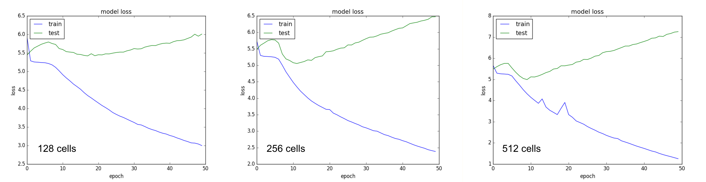
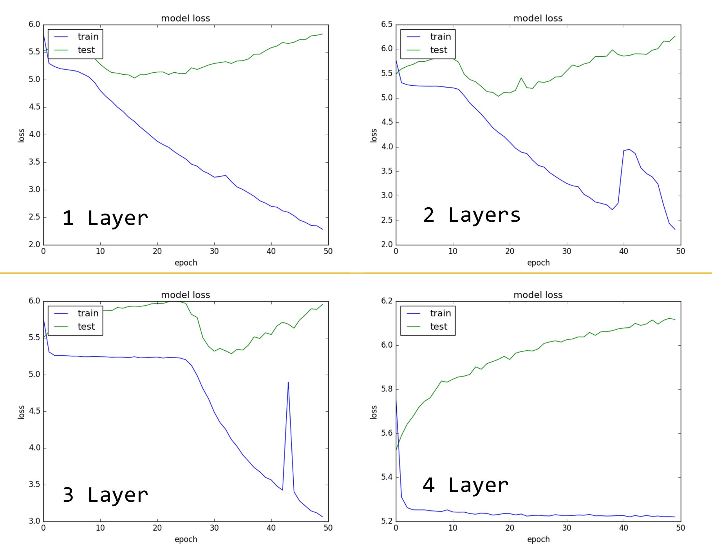
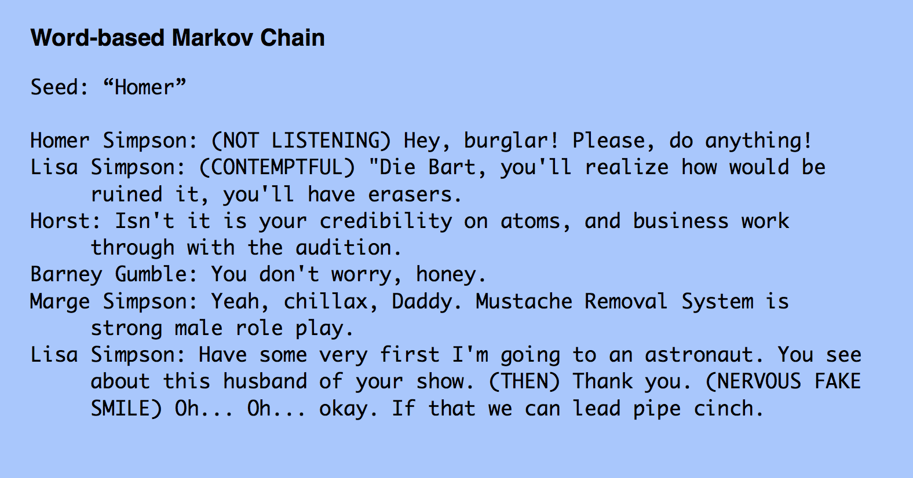
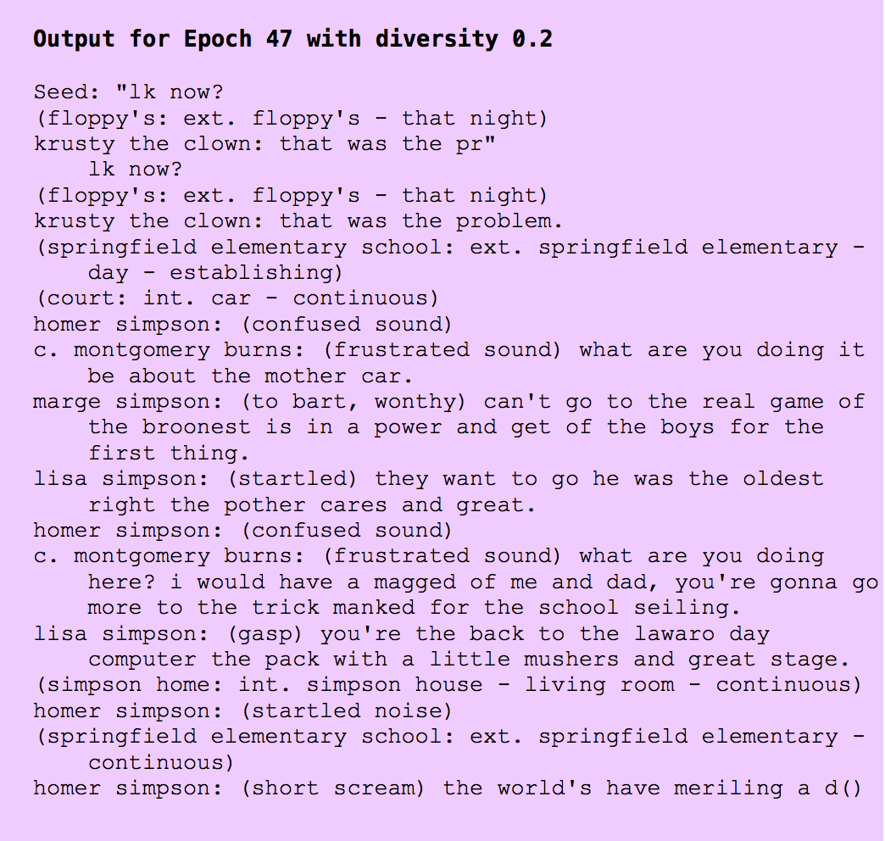

Simpsons Text Generation
Overview

For our Machine Learning (CSCI 3345, Fall 2016) final project with Prof. Alvarez, we were given the opportunity to work with one of the various ML approaches we studied over the course of the semester in a practical manner. The problem we decided to tackle was text generation. In particular, we wanted to see how well a machine could write more Simpsons scripts based on 600 episodes of text as training data. We decided to use a Long Short-term Memory Recurrent Neural Network for the procedural text generation, and due to the convincing argument put fourth by this article, we also compared our results with text generated using a simpler method: A Markov Chain.
Hosted on Github here.
Background
Procedural natural language generation is an interesting and novel application of modern machine learning techniques. The ability to generate natural human language has a wide range of applications including software user interfaces that offer dynamic text, natural language summaries of live data, and even the creation of entertainment and comedy media. However, creating text that feels and sounds like natural spoken language is a challenging task. Identifying and understanding the characteristics of existing natural language samples can allow us to leverage these rules in the creation of new language samples.
The aim of this project was to explore some of the available procedural techniques for generating natural language. These modern procedure based approaches extract features from text samples in order to create a To accomplish this, we wanted to acquire a large data set of language that has many strong identifiers and a specific style so that we could reliably extract and apply characteristics of the text.
With this is mind we acquired a data set of all dialogue from the long running television show, the Simpsons. the Simpsons has been running new 30-minute episodes since 1989 and has aired of 605 episodes. the Simpsons data set was large, uniquely-styled, and varied enough in topic to serve as a viable and novel learning target. Using this data we were able to experiment with and analyze two different language generation approaches, implementing Markov chain and recurrent neural network models to create new text samples in the style of the Simpsons.
Technical Introduction
Natural Language Generation (NLG) typically refers to the practice of taking raw data and transforming it into a human-familiar natural format. Natural Language Generation has the business motivation of helping employees more quickly understand data insights as they change day to day (Glascott). NLG differs from other procedural generation tasks in that it typically has a root piece of information the algorithm is communicating, and builds language around it, where the goal of many procedural generation algorithms is to create an entirely new piece of content. However, NLG problems do introduce many challenging tasks around creating syntactically correct sentences and phrasings, and need to be properly tailored and trained to match the complex syntax of human language.
Procedural generation of natural language can be broken into two main categories. Character level generation creates sequences of text character by character. This method uniquely can introduce misspelled words since it is building language from the characters up. Word level generation uses only words from sample text or a dictionary. The comparison of these two models will be analyzed later in this paper.
In this project our goal was to apply and compare two methods of Procedural Content Generation to the task of generating new and unique natural language samples. Markov Chains are considered one of the simpler approaches to procedural content generation and can be used as a benchmark for other methods, as they construct a large probability function which characterizes sequences in media in order to recreate samples (Rowe). The concept of modeling language as a Markov Chain traces its roots to a 1948 paper written by Claude Shannon which proposed a probabilistic model for describing language (Shannon 1948). Modernly, approaches inspired by this original model have gained increasing popularity in the creation of entertainment-oriented procedural text generators, including many that have built Markov Models from the works of Shakespeare to generate Shakespeare-esque language samples (Smith).
A second method, Recurrent Neural Networks, has gained recent attention for procedurally generating natural language and other styled media. RNN based character level approach was shown to produce realistic results when trained on sets of similar text samples from Wikipedia, and the New York Times (Sutskever et al 2011). Similar to the work of Markov Models, RNNs have also been applied to the novel task of producing Additional refinements to the model have also been explored, including an approach we used here, the use of Long Short-term Memory RNN for sequence generation. LSTM RNNs have been effective in Procedural Content Generation, as shown by one paper which demonstrated their ability to generate new samples of handwriting when trained on a set of human written samples (Graves 2014).
Challenges
There are many challenges involved in creating and running new implementations of these methods of generating text. Two of the most notable being finding a balance between over and underfitting, and managing long running times. It was often difficult to tell when a sample had overfit to the input. Since our goal was to create coherent phrases and sentences it often seemed like a good thing when we were able to achieve an output with a full line or two of sensible dialogue, but we found it was often the result of overfitting and the lines had been pulled verbatim from the sample input. Finding the balance between the methods that would overfit and pull entire conversations from the training samples, and underperforming models that introduced too much diversity and produced gibberish outputs was a constant challenge.
Additionally, long training time on our RNN models proved to be a challenge that we had to strategize around. Ideally we would have been able to test multiple full runs on our entire data set, but this was not feasible in the time frame, or with the resources at hand. For this reason we often tested the effects of parameter adjustments on smaller subsets of our data for runs that would take hours instead of days. This challenge was particularly well highlighted by Sutskever et. al who trained their RNN for five days on 8 high-end Graphics Processing Units to achieve their strong results. Picking and choosing which runs and test to perform in order learn the most about our model and the effects of its parameters was another unique challenge to this problem.
Methods
As evidenced by our preliminary research into various text generation models, the Recurrent Neural Network (RNN) and Markov Chain (MC) arose as two models suitable for comparison in this project. And while we will go into the specifics of each, we will first talk about the Dataset that remained constant throughout the project. Using Todd Schneider’s Rails app, from his github repo film-springfield, we were able to successfully crawl simpsonsworld.com which hosts every Simpsons episode ever aired, along with the script for that episode. The reason for the rails app is access to the Nokogiri Library. Nokogiri is an HTML, XML, SAX, and Reader parser. I has features like the ability to search documents via XPath or CSS3 selectors, which are well suited for this specific task of parsing through the complicated formatting of the Simpsonsworld.com website. The rails app performed all of the heavy lifting by grabbing the relevant script data (i.e.: scene location, time of day, speaker) from simpsons world, wikipedia, and imdb and utilizing a PostgreSQL database to store the information in a well organized and labeled relational database. What we were left with in our CSV file we exported from postgres were rows that corresponded to individual lines from the script. The columns of the data we utilized varies slightly between methods (MC vs RNN) but the major ones were unsurprisingly character (who's speaking the line if it is a spoken line) and text (what was spoken and any sentiment directions for the voice actors in parenthesis). We also had access to the scene ID within each episode so that we can determine when a conversation exchange ended. From here we were able to script some text parsing in Python to generate plain text files of various lengths for training that we could feed into the RNN and MC, since all the RNN needed was raw script data.
Conceptually, the Markov Chain is fairly simple. It builds a matrix of probabilities between states in a state machine. Building this matrix based on the training data requires iteration through the entire text, and for each n-character long sequence, we add to a hashmap this sequence and the single character that follows it in the text. Once all sequences have been fed into this map, we can calculate probabilities of what character should come next given a sequence already seen as input. In essence, the hashmap contains a probability distribution function (PDF) for each sequence it has been fed. Once these probabilities have been calculated from the training data, we can use the Markov Chain in a generative sense. We feed it a key from the hashmap and using random values, the next character in the string we are building will be selected from the PDF.
Ultimately, we implemented two versions of the Markov Chain. The first implementation was a character-based model that created chains of a given 'order.' An order three model of this design, for example, would create a PDF as described above for every sequence of three characters and the likelihood that a given single character would follow that sequence. During generation, the model would be given a seed of at least the order length and generate a character based on the stored probabilities. The generator cursor would then shift one character to the next group of characters of the order length (including the character just generated) and make another probabilistic choice, terminating after generating a predetermined length of text.
The order of the model served as a measure of model complexity– lower order models would often underfit the data and produce nonwords or otherwise incomprehensible text while higher order models would overfit the data and copy entire phrases or even lines from the source text. While we were able to reach an acceptable balance between generating mostly comprehensible and original text with orders of n = 4 and 5, we decided to try an additional approach to improve results and implemented a word-based model.
This new model split the text based on whitespace and assigns to each unique word a number of probabilities of what may follow. The word-based model has a few distinct advantages over the character-based: misspellings and nonwords do not appear (unless they appear in the source text) and the generated text is often more comprehensible due to the guarantee that each generated word (rather than single character) follows its preceding word under some existing grammatical structure in the source text. The word-based model could certainly lend itself to overfitting for example, should a unique word only appear once in the source text but with enough data we found those issues to be significantly reduced.
The word-based model in its final form thus created a PDF for every word in the source text and the probabilities of the existing words that follow. Trailing punctuation was included as part of a word, such that "car" and "car," would be considered different words. This tweak preserved punctuation in the output text, which was generated by taking a seed word and inserting an empty space followed by a probabilistically chosen following word.
Our Recurrent Neural Network implementation uses only NumPy and Keras on top of a Theano backend, using prior work by Keras creator Francois Chollet and Jason Brownlee from machinelearningmastery.com as a starting point. For the word-level model, we read in the raw simpsons script data and format it into a list of words and characters in the order that they appear in the text. We do this using a simple regex in order to select only the features from the data that we want our model to consider. We omit uncommon symbols due to the noise that they add to the data, and omit spaces in consideration of the size-related problems we faced during training, seeing that spaces add a considerable amount of size to the data. With these features filtered out of the data, and the data now in list form, we then create two dictionaries allowing us to translate between word IDs and the words that they represent. The word IDs allow the words to be represented numerically in the RNN model, and the mapping between words and their IDs allows the model's output to be interpreted by humans.
The data is represented as a 3D matrix, with dimensions of the number of sequences we train on, the size of each sequence, and the number of words contained in the data. This one-hot representation of the data was severely space-inefficient for the word model because of the large number of words contained in the data, which restricted the amount of data we were able to train on for this model. This space inefficiency inspired our implementation of a similar character-level model that predicted sequences of characters instead of words. The character model's representation was the same as that of the word model, with the only noteworthy difference being that its dimensionality was far smaller due to the number of available characters being less than the number of available words. This change allowed the character model to be trained on a considerably larger number of sequences than the word model.
The model itself had two hidden LSTM layers with 512 nodes each. The model applies dropout for regularization, setting 40% of weights equal to zero at each update during training. Last, the output layer is a fully-connected dense layer with a softmax activation function, having one node per character, where the value of each node is the likelihood of that being the next item in the sequence.
We compile this model and train it for several epochs. The number of epochs was 50 for the parameter tuning stage, and 100+ when trying to get the best model possible after adding more data. Using 20% of the data as test data, and training on batch sizes of 64 sequences, we collect training and test scores from each epoch during training and let the model run to completion. To generate predictions, we find the best model, load its weights, and give the model a random seed from the training data. Taking this seed as a starting point, we then iteratively predict what word will come next in the sequence, generating original text.
Results
Parameters that we played with to observe different results included nodes per layer, total LSTM layers, and sequence lengths of words, or varied window sizes of the input. We discovered that regardless however many nodes we used, the training data loss always tended towards 0. However, increasing nodes had different results for test data. At 128 nodes, test data showed a higher starting point for loss but a very shallow slope of increasing loss as we trained through epochs. For 256 and 512 nodes, the test data's loss showed a rise and then drop initially, and then a steady incline in loss starting at around epoch 10. However, 512 nodes gave a lower loss starting point. The results from tuning the number of nodes held consistent with what we learned this semester - adding more nodes increases complexity, meaning higher variance and a strong likelihood of overfitting. We can see the results of overfitting in the graph, where the test data loss diverges significantly from the training data loss at epoch 10.
We also experimented with the number of layers that our LSTM used. With 1 layer, we saw again a steady decrease in training data loss and a steady increase in test data loss. The gradual decrease in training data loss implies a lack of sensitivity of the model which results in high bias. Thus, the algorithm was likely overgeneralizing and missing the relevant relations between features and target outputs, resulting in a consistently high error. At three and four layers, we see a sharp dropoff in both graphs - indicative of over approximation in the result, and thus high error rate. Both graphs affirm this intuition, as we see that the test data loss jumps at the point where the training data loss drops off suddenly. At layer 2, the training data loss is significantly less smooth than layer 1, but we see a match between the training data loss and the test data loss at around epoch 10, where there is a dropoff in both losses and thus an early positive sign that our model was learning correctly. However, as more epochs pass, the training data loss and test data loss again begin to diverge, possibly again due to overfitting.
High bias can cause an algorithm to miss the relevant relations between features and target outputs (underfitting). In general, it made sense to use a moderate value of every parameter for the value - to maintain a moderate level of complexity with 512 nodes and 2 layers. This was representative of what we learned in class - to achieve a balance within approximation and generalization by leaning towards a generally simpler model.
We also played with the amount of data that the neural net was trained on. The first character based neural net was trained on significantly more data, and the graph shows consistent results with our expectations. Since there is a relatively low finite number of characters used in the Simpsons scripts, more data meant better loss.
Conclusion
While we conducted our comparisons and contrasts between the Markov Chain and the Recurrent Neural Network, what we found was that both had their triumphs and shortcomings. To solve the problem of naive text generation to mimic style and structure, the straightforward Markov Chain yielded viable results. Given enough training data and space complexity to store in memory all the combinations it may run into in a large training text, the Markov Chain was able to reliably produce results that avoided copying dialogue verbatim, but also produced coherent phrases.
That being said, the Recurrent Neural Network holds significantly more promise for generating more original, authentic text based on training data. Along with the increased learning curve associated with understanding the way in which RNNs operate, our output was typically more robust when training went well. For instance, the ability for the RNN to pick up the minute details in context is something a Markov Chain would never be able to figure out.
Using our rewritten Character LSTM, we were able to train on the most data of all of our models. The results picked up the most context, and by varying the “diversity” a term that was used by Keras creator Francois Chollet, we managed to get a range of very different results per the weight results of each epoch. The effect of this “diversity” is that it, in a sense, pre-normalizes the log of the probabilities generated by the lstm, before being re-exponentiated and normalized as usual. In the end, though spelling errors were about, it picked up the most on the injection of stage direction and character emotions that most scripts use affect an actor’s tone. The result below was generated on an 800kb excerpt of the full scripts with a length of 818245 characters which 69 are unique. This was trained on the same model we have been using for our word model. The difference is how the texts were preprocessed and the max length of the sliding window used to read sequences into the input matrix. As you can see, the net completes the missing characters at the end of the seed string, and then immediately tries to establish a scene and then dialog, something any normal script will do. The results here are promising but after 47 epochs and loss: 0.6263 - val_loss: 1.8713, it still indicates more data will result in better context and text generation.
While the RNN models did not perform as well as we had initially expected, they did show clear promise in understanding temporal structures in sequential data, understanding contextual elements in text sequences in a way that only neural models can. Given more time, we would attempt to train similar models with larger amounts of data, distribute them across multiple GPUs for faster training, trained multiple models concurrently for more efficient parameter tuning, and tested deeper networks for larger amounts of epochs. While deep neural networks have had recent breakthroughs in the domains of image classification, machine translation, and many other areas, sequence generation is still a relatively new application of these models. While this project shows that there is some promise in this area, there is clearly room to grow in the field of neural natural language generation.
This project was done by Drew Hoo, Ryan Reede, Charles Fox, Emily Lu, James LeDoux and Cameron Lunt.
Sources
- Karpathy, Andrej:The Unreasonable Effectiveness of Recurrent Neural Networks 2015 http://karpathy.github.io/2015/05/21/rnn-effectiveness/
- Olah, Christopher: Understanding LSTM Networks 2015http://colah.github.io/posts/2015-08-Understanding-LSTMs/
- Elsen, Erich: Optimizing RNN performance https://svail.github.io/rnn_perf/
- Brownlee, Jason: Text Generation With LSTM Recurrent Neural Networks in Python with Keras 2016 http://machinelearningmastery.com/text-generation-lstm-recurrent-neural-networks-python-keras/
- Brownlee, Jason: How To Develop and Evaluate Large Deep Learning Models with Keras on Amazon Web Services 2016 http://machinelearningmastery.com/develop-evaluate-large-deep-learning-models-keras-amazon-web-services/
- Graves, Alex: Generating Sequences With Recurrent Neural Networks 2014 https://arxiv.org/pdf/1308.0850v5.pdf
- Sutskever, Ilya; Martens, James; Hinton, Geoffrey: Generating Text with Recurrent Neural Networks 2011
http://www.cs.utoronto.ca/~ilya/pubs/2011/LANG-RNN.pdf - Shannon, C.E.: A Mathematical Theory of Communication 1948
http://worrydream.com/refs/Shannon%20-%20A%20Mathematical%20Theory%20of%20Communication.pdf - Princeton CS Dept: Markov Model of Natural Language 2005
http://www.cs.princeton.edu/courses/archive/spr05/cos126/assignments/markov.html - Smith, Jason: SHAKESPEARE SONNET SOURCED MARKOV TEXT GENERATION 2010
http://www.devjason.com/2010/12/28/shakespeare-sonnet-sourced-markov-text-generation/ - Adam, Fedja:Procedural Generation of Text 2015 http://www.adamslair.net/dualitybin/Docs/MasterThesis.pdf
- Glascott, Mary Grace: What is Natural Language Generation? 2015
http://resources.narrativescience.com/h/i/124944227-what-is-natural-language-generation - Schneider, Tod: Simpsons Source Data https://github.com/toddwschneider/flim-springfield